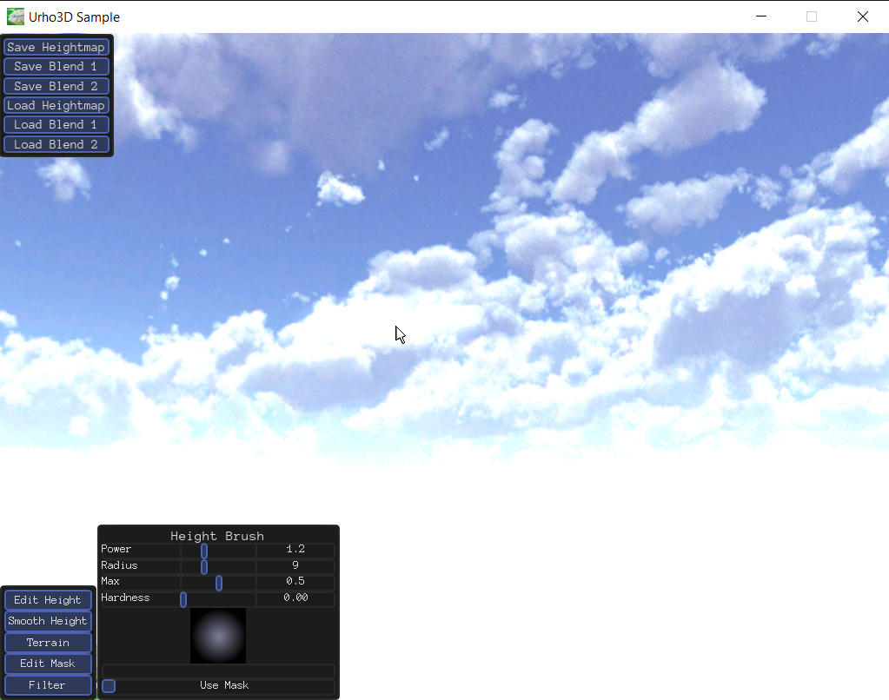
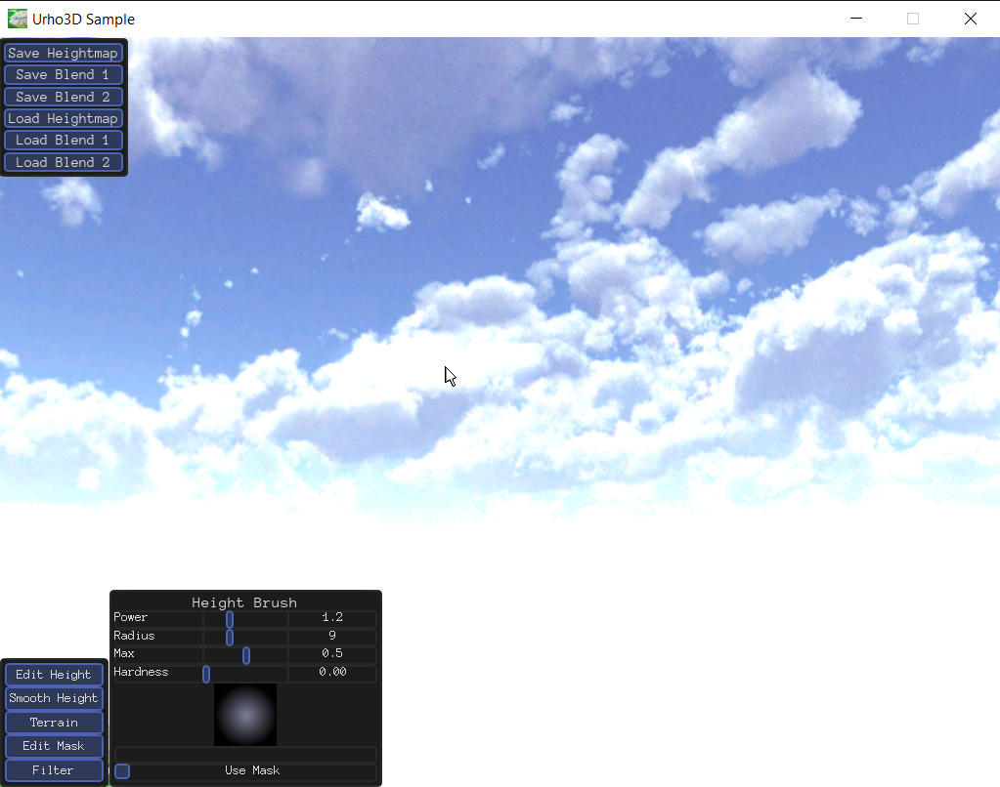

crisx
Hi
I tried to use the JTippetts’s Terrain Editor, could successfully build with Urho 1.6 lib, but when I launch it, the terrain is all blank, the texture painting doesn’t seem to do anything

I must have missed something…

Hi
I tried to use the JTippetts’s Terrain Editor, could successfully build with Urho 1.6 lib, but when I launch it, the terrain is all blank, the texture painting doesn’t seem to do anything

I must have missed something…

That’ll be due to missing shaders on D3D11 or D3D9, most likely. Since I haven’t updated those yet. D3D11 is hard for me to do, because I am constantly uninstalling Visual Studio due to hatred, and a D3D11 build on MinGW is tricky. I’ll try to get the shaders updated soon, might have to wait until I can use a different computer at work or something.
This project is not really active, so I apologize for the rough state of things. Just never have enough time to do all the stuff I want to do these days. :/

Alright, I managed to get a D3D11 shader pushed to github. It’s D3D11 only; no D3D9 support, since D3D9 doesn’t support texture arrays. I might provide a D3D9 path that just uses a texture atlas, or I might just forget about D3D9 altogether since it really is pretty obsolete.
thanks for the clarification, I recently upgraded my OS to windows 10 so it might be one of the reason…
too bad… your tool looks really great
“too bad… your tool looks really great”
Give it a try, then. I said I got the D3D11 shader in, so you should be able to run it now.
I tried with the last repository but I’ve got the same problem
Are you using D3D11 or D3D9?
My bad, it’s D3D9…
I will recompile Urho lib with URHO3D_D3D11 set and try again
I compiled Urho3D with URHO3D_D3D11=1 but I still have references to d3d9.lib, so I’ve got the same result when I builded Terrain Editor with the new lib, maybe it’s an issue with Visual Studio I don’t know
I tried to change d3d9.lib with d3d11.lib but it’s ending with compilation errors
Make sure it’s a clean build. Sometimes it doesn’t work if you just try to change an option like that on top of an existing build. I know I’ve had issues before.